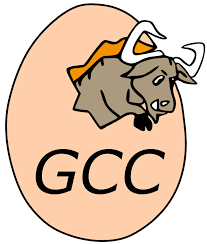

About me...
0x00 簡介
哈囉! 我叫劉尚賢，由於英文名稱是 Dennis ，所以大家都習慣叫我丹尼斯。
是一位熱愛寫程式和各式資訊技術的研究生，雖然我目前主修機械，但主要以嵌入式開發為主。目前定居在
台灣基隆市暖暖區
，雖然心情常常被基隆的…”好”天氣影響，但請相信我，我是一個輕鬆又好相處的人~
目前最喜歡的程式語言是 C++，雖然它年代悠久、複雜又古板，標準庫都 2024 年了都還沒把網路部分收納進來，周邊工具又多又雜，讓人感覺喜歡它的我是個受虐狂，但我從它的身上學習到了程式運作的基礎原理，感受到了程式豐富的多樣性以及有了電腦凡事都能的感覺。我想，這就是我這麼喜歡它的原因吧!
目前最喜歡的程式語言是 C++，雖然它年代悠久、複雜又古板，標準庫都 2024 年了都還沒把網路部分收納進來，周邊工具又多又雜，讓人感覺喜歡它的我是個受虐狂，但我從它的身上學習到了程式運作的基礎原理，感受到了程式豐富的多樣性以及有了電腦凡事都能的感覺。我想，這就是我這麼喜歡它的原因吧!
0x01 個人特質
-
共情能力
由於我很長在腦內有很多小劇場，因此也比較容易站到自己的對立面去思考問題。如此讓我對他人的行為舉止的理解能力較強。 -
慢熱
身為理工研究生的一員，我的個性比較內斂，與其說是害羞，更像是需要觀察一個人的觀察期比較長。在觀察期結束之前，我會扮演一個安靜聆聽者去盡可能判斷這個人的行為處事，最終才決定是否與之深交。 -
喜愛教學
雖然上面提到我比較慢熱，但一旦涉及到教學，尤其使教導他人程式相關的課題時，我會變得積極主動，因為我在剛學習程式時也遇到過許多瓶頸。 例如環境變數設錯、安裝路徑等基礎課題，往往是阻止新手繼續往前的關卡。看到受困的人，我就會想到從前花了許多時間破關的我，因此會不由自主地想幫助他們，讓他們學習的過程能夠更加平穩，及早體驗到寫程式的快樂。
0x02 愛做的事
-
遊戲
我從小就很喜歡玩遊戲，基本上射擊、Dota和戰略遊戲都玩過蠻長的時間，現在比較常打 LOL 的 ARAM。 -
音樂
雖然對樂理和看譜幾乎都一竅不通，但是還是喜歡在獨處時放聲高歌。 -
泡溫泉
最近才發現的事情，隨著年齡漸長，身體有時候會有僵硬的感覺，但泡完溫泉後會感覺通體舒暢，又可以再戰十年天。 -
讀小說
作為從小就比較文靜的人，閱讀也佔據了我小時候許多的時光，我閱讀的主題五花八門，但是我最喜歡的便是武俠還有偵探小說。武俠小說中我最喜歡金庸以及古龍，而偵探小說則涵蓋福爾摩斯、亞森羅蘋、東野圭吾和阿嘉莎等知名作家。 讀書能安靜我的心，也短暫將我抽離這繁雜的世界，於我而言閱讀能使我陪伴書中的主角，與他們一起體驗生活。
0x03 學習經歷
- 碇內國小
- 碇內國中
- 松山高中
- 國立清華大學動力機械工程學系-畢業
- 國立清華大學動力機械工程所-在讀
0x04 最愛的程式工具

VS Code
由微軟開發的免費編輯器，因為其高自由度和強大功能目前是我最常用的程式編輯器。

GNU Compiler
古老的編譯器，像是藏在深窖中的陳年佳釀，需要花時間東翻西找才有機會體驗他的美好。

CMake
一個跨平台的 C/C++ 編譯套件，能夠讓你的 C/C++ 專案在各平台都順利編譯。

Github
保命工具，可以很好地管理程式，並整合 CI/CD 確保每次上傳的程式都能通過測試。